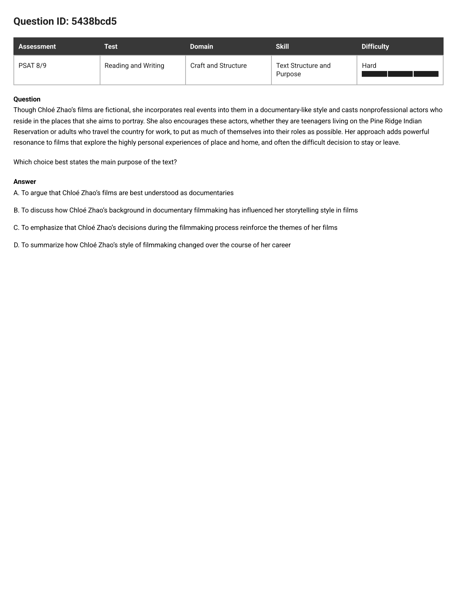
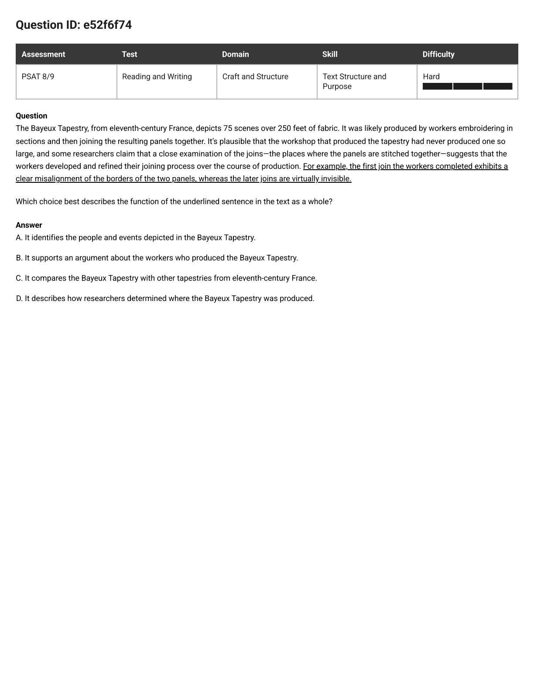
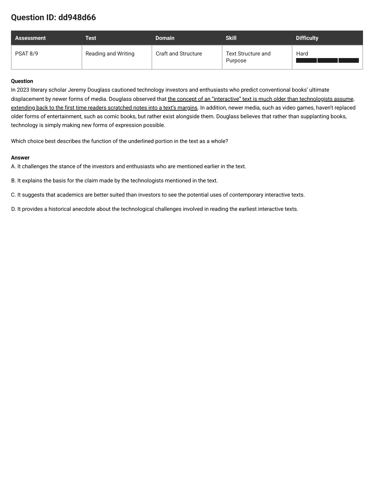
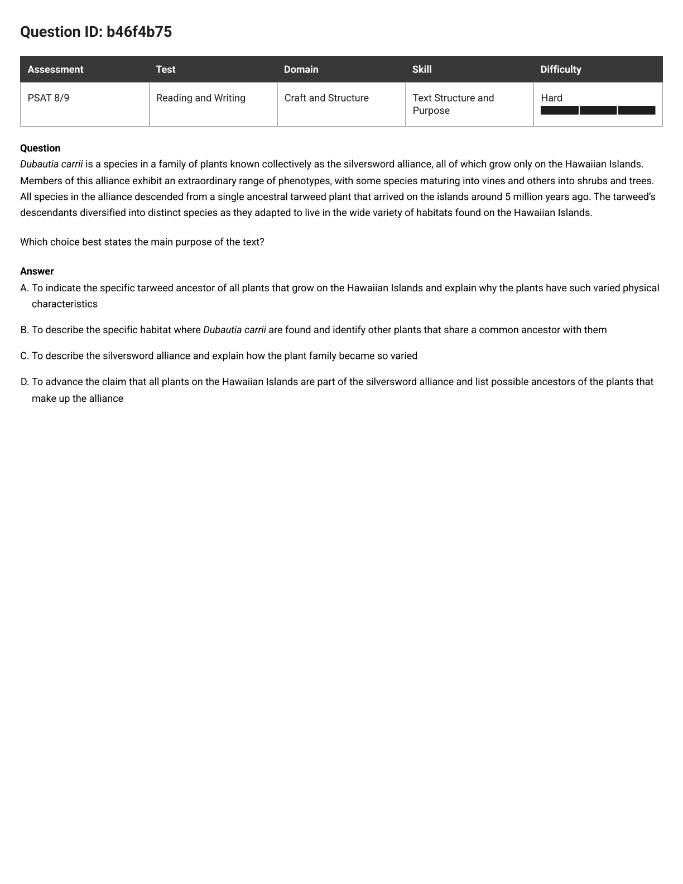
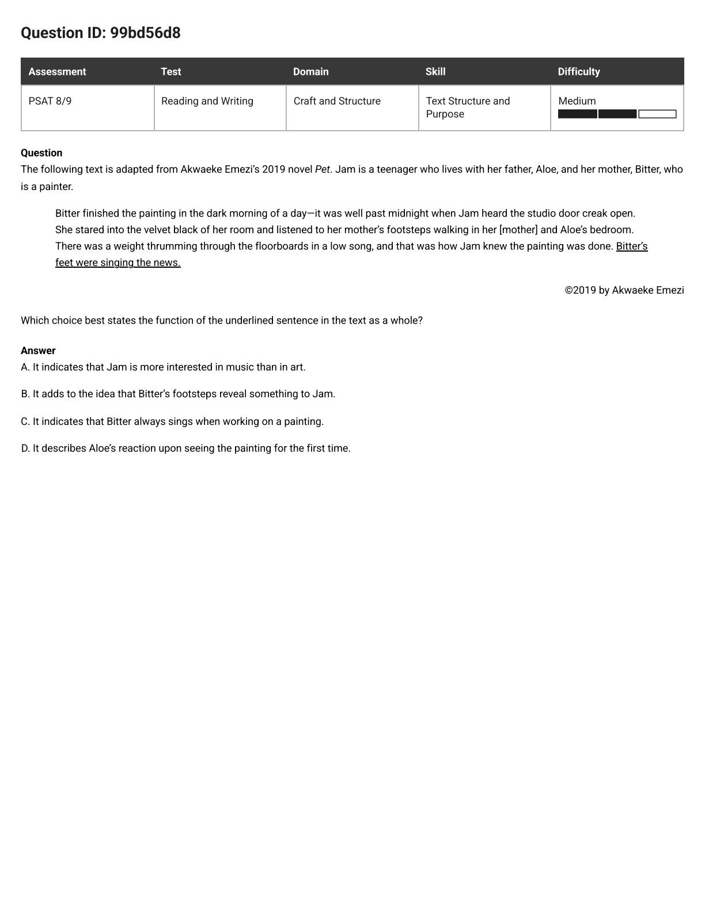
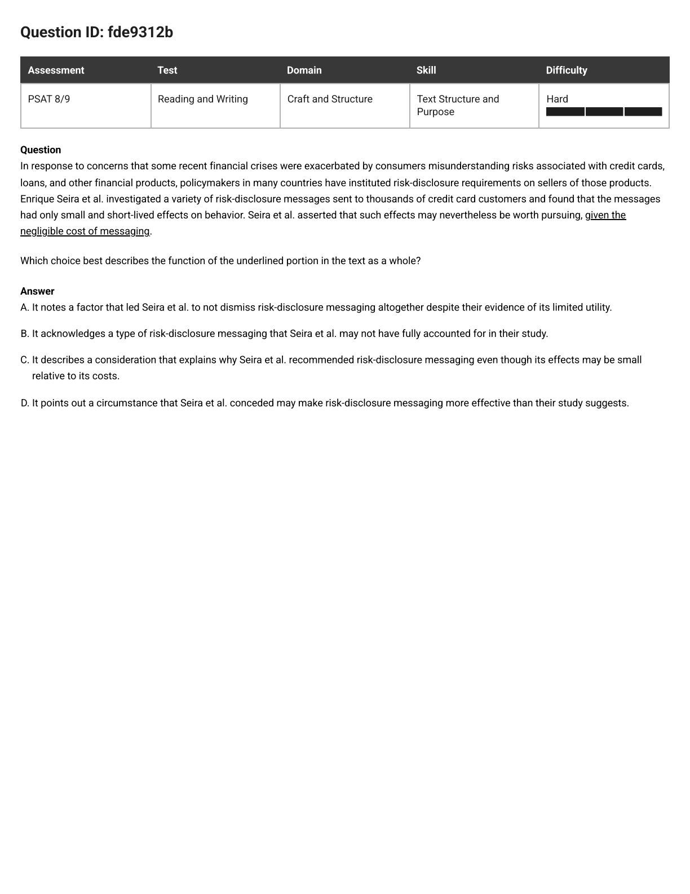
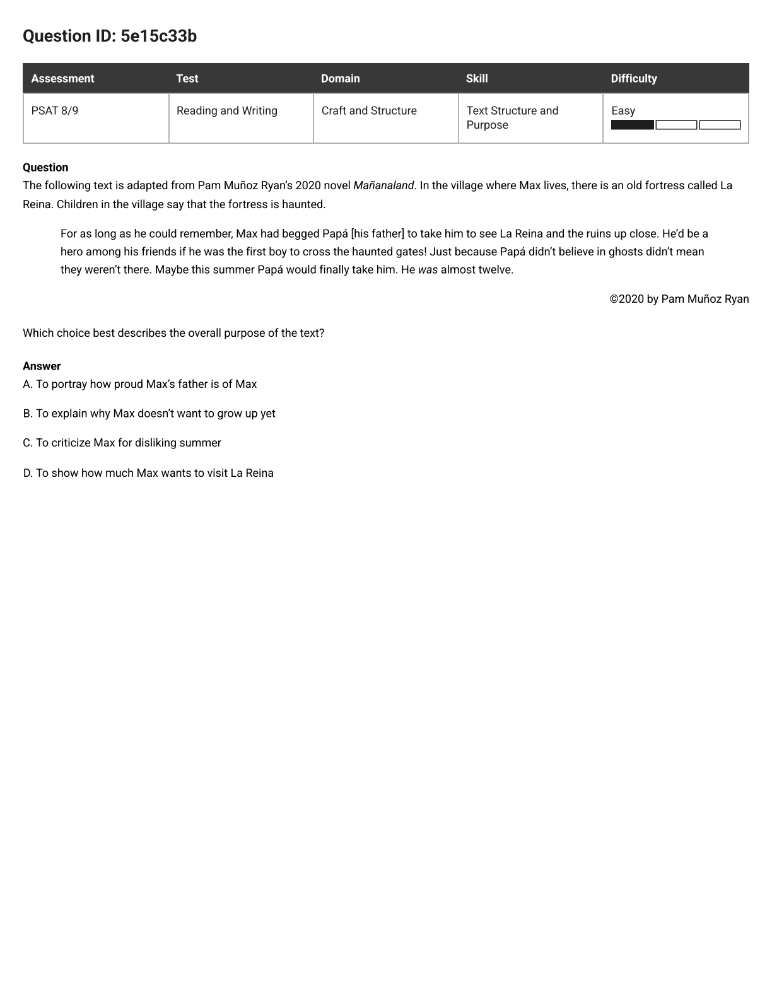
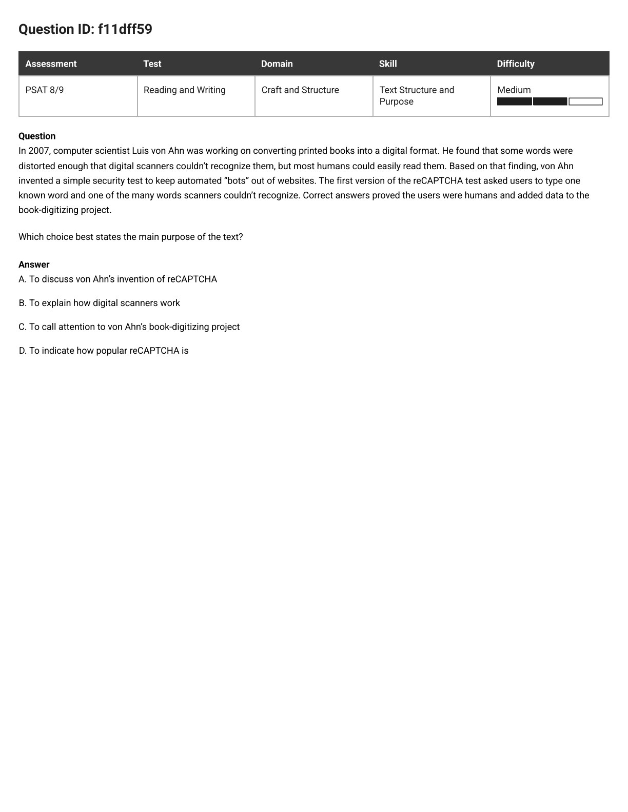

PSAT 8/9 · Text Structure and Purpose · 6 missed questions, one model
Not one of these six questions asks what the text says. Every one asks what a piece of it is for — the job it does for the sentences around it. Miss that difference and all four choices look true, because they were built to. Four steps fix all six.
Put your hand over A, B, C, D. Every question on this page is easy before you read them and nasty afterwards, because the wrong choices are written to sound like reasonable things a text might do. Read the choices first and you spend the whole question asking "could this be true?" — which is the wrong question.
Finish this sentence before you uncover anything: "It’s here to ______." Start with a verb — to back up, to knock down, to give a reason, to show, to add. For a whole-text question, finish "This whole text is here to ______."
You usually get the answer for free, because writers put up signposts. Five of the six cards in this cluster hand you one:
| The word | The job it announces |
|---|---|
| For example | here comes the evidence for what I just claimed |
| given | here comes my reason |
| Though / Although | I’ll admit this first, then disagree with it |
| whereas / but | here comes the contrast |
| In addition | second punch, same fight |
| nevertheless | despite what I just said, I’m keeping the idea |
Each choice is two things glued together: a job word, then what the job is about. To summarize | how her style changed over her career. It compares | the Tapestry with other tapestries. Cut every choice at that seam and check the halves separately. Both must survive. A right verb with a wrong object is still wrong; so is a right object with a wrong verb.
Watch for choices with two verbs joined by "and" — "to describe … and explain", "to indicate … and explain". That’s two jobs, and the text has to be doing both. Half a match is a miss.
Look at the last four words of the question: "in the text as a whole." They are not decoration. They mean the answer has to say what this piece connects to — the claim it backs, the stance it attacks, the idea it adds to, the reason it supplies.
Here is the thread running through all six misses. Look at what the correct answers actually say: it challenges the stance of the investors mentioned earlier; it supports an argument about the workers; it notes a factor that led the researchers not to give up despite their evidence; it adds to the idea that the footsteps reveal something. Every single one names two things and hooks them together.
Recap. Retells what the sentence says and never names a job. Calls a punch in an argument "a historical anecdote." This is the species this whole skill exists to punish.
Wrong Window. Describes a different part of the passage than the one you were asked about. True somewhere; wrong here.
Wrong Verb. Names a job nothing in the text performs — argues, compares, summarizes a change — or the right verb pointed at the wrong objects.
Off the Page. Content that simply isn’t there: a background, a habit, a reaction, a rival, a question nobody asked.
Backwards. Props up the very thing the text is knocking down, or flips a comparison — or an "only" — the wrong way round.
Stretch. Takes a real word and cranks it: "documentary-like" becomes "documentaries", one night becomes "always", a plant family becomes every plant on the islands.

The question as it appeared
Though Chloé Zhao’s films are fictional, she incorporates real events into them in a documentary-like style and casts nonprofessional actors who reside in the places that she aims to portray. She also encourages these actors, whether they are teenagers living on the Pine Ridge Indian Reservation or adults who travel the country for work, to put as much of themselves into their roles as possible. Her approach adds powerful resonance to films that explore the highly personal experiences of place and home, and often the difficult decision to stay or leave.
Which choice best states the main purpose of the text?
In plain words: why did anybody bother writing this paragraph?
Cover the choices and retell the paragraph in two beats:
So say it: "This text is here to show that the way she makes her films makes the films’ subjects hit harder." That’s the job. Now uncover.
A, B and D each talk about one thing. C is the only choice that names both halves of the paragraph and says the first one serves the second. When a text is built as "here’s what she does … here’s what it achieves", the purpose is always the arrow between them.
C — her filmmaking decisions reinforce her films’ themes.
Step 2 did the work. Once you’d said "the way she makes them makes them hit harder", C was the only choice left standing — and you never had to weigh whether the other three "sounded true".
T6, Stretch. "Documentary-like style" gets cranked into "are documentaries". One suffix does all the lying. Whenever a choice drops a hedge word the text was careful to include, that’s your kill.
T4, Off the Page. Her "background in documentary filmmaking" appears nowhere on the card. It’s invented from the word documentary-like — plausible in real life, absent from the text, and that’s all that counts.
T3, Wrong Verb. You cannot summarize a change that the text never describes. No years, no stages, no "at first … but later". Kill any choice whose verb needs evidence the passage doesn’t contain.

The question as it appeared
The Bayeux Tapestry, from eleventh-century France, depicts 75 scenes over 250 feet of fabric. It was likely produced by workers embroidering in sections and then joining the resulting panels together. It’s plausible that the workshop that produced the tapestry had never produced one so large, and some researchers claim that a close examination of the joins—the places where the panels are stitched together—suggests that the workers developed and refined their joining process over the course of production. For example, the first join the workers completed exhibits a clear misalignment of the borders of the two panels, whereas the later joins are virtually invisible.
Which choice best describes the function of the underlined sentence in the text as a whole?
In plain words: the sentence starts with "For example." An example of what?
"For example" means: what follows is evidence for the thing I just claimed. So put your finger on the sentence immediately before the underline and read the claim it makes: researchers say the workers developed and refined their joining process over the course of production — in other words, they got better as they went.
Now check that the underlined sentence really is that evidence:
| Which join | What the card says about it |
|---|---|
| the first join | a clear misalignment of the borders |
| the later joins | virtually invisible |
Sloppy first, flawless later. That is exactly what "got better with practice" looks like. Say it: "It’s here to back up the researchers’ claim that the workers improved as they went."
Identifies · supports · compares · describes. Only one of those is a job you can do with the word "for example" — and it’s supports. Then check B’s object: an argument about the workers. The claim was about the workers refining their process. Both halves hold.
A, C and D each describe the sentence as if it were floating alone. B names something else in the text — "an argument" — and says the sentence serves it. That’s what a function is. When two choices are close, the one that connects the piece to the passage wins.
B — it supports an argument about the workers who produced the Tapestry.
Step 2 did the work: the phrase "For example" is a job description printed on the front of the sentence, and the job it names is evidence for the claim just made.
T2, Wrong Window. "Scenes" belong to the card’s first sentence — 75 of them over 250 feet. The underlined sentence never mentions a single person or event; it’s entirely about seams. Right passage, wrong sentence.
T3, Wrong Verb. This one is sneaky, because the sentence does compare — look at "whereas". But it compares the first join with the later joins on the same tapestry. No other tapestry exists anywhere on the card. Right verb, wrong objects.
T4, Off the Page. Nobody is hunting for where the tapestry was made — the card tells you in its first six words ("from eleventh-century France"). The argument is about how it was made. Swapping how for where is a one-word forgery.

The question as it appeared
In 2023 literary scholar Jeremy Douglass cautioned technology investors and enthusiasts who predict conventional books’ ultimate displacement by newer forms of media. Douglass observed that the concept of an “interactive” text is much older than technologists assume, extending back to the first time readers scratched notes into a text’s margins. In addition, newer media, such as video games, haven’t replaced older forms of entertainment, such as comic books, but rather exist alongside them. Douglass believes that rather than supplanting books, technology is simply making new forms of expression possible.
Which choice best describes the function of the underlined portion in the text as a whole?
In plain words: is this sentence helping the investors, or hitting them?
The word cautioned in the first line sets up a fight, and once there’s a fight, every sentence is wearing a jersey. Map the beats:
"It’s here to knock down what the investors assume." Notice that you can say this without knowing what a margin note is, or caring. Once the jerseys are on, the job is obvious.
Challenges (against the investors) · explains the basis for (for the technologists) · suggests (a comparison of two groups) · provides an anecdote (no side at all — a story). You already know the sentence is against the investors, so three verbs die on contact.
"…the stance of the investors and enthusiasts who are mentioned earlier in the text." That last clause is A telling you it has done the plug step: it connects the underlined portion to a specific thing elsewhere on the card. None of the other three names anything the sentence is working on.
A — it challenges the investors’ and enthusiasts’ stance.
Step 1 did the work: the moment you find the two sides, the underlined portion has to belong to one of them, and "cautioned" told you which.
T5, Backwards. The perfect wrong-jersey trap. The underlined portion says technologists assume wrongly — it attacks their claim. B has it propping their claim up. Same words, opposite direction.
T4, Off the Page. Nobody on this card ranks academics against investors. Douglass being a scholar is a fact about the author, not a claim in the argument.
T1, Recap. The purest example on the page. Yes, the sentence mentions old readers and their margins — so D "sounds like" the sentence. But calling it "a historical anecdote" turns a punch into a bedtime story, and it names no job at all. ("Technological challenges" is invented too; nothing on the card says margin-scratching was hard.)
Three more of your misses, then two easier ones from the same skill. For each: cover the choices, say the job in one sentence starting with a verb, split each choice at the seam, then plug. Open the reveal only after you’ve committed — and check you can name the trap species on every wrong choice.
b46f4b75 · Hard · whole-text purpose · every choice has TWO jobs in it

Dubautia carrii is a species in a family of plants known collectively as the silversword alliance, all of which grow only on the Hawaiian Islands. Members of this alliance exhibit an extraordinary range of phenotypes, with some species maturing into vines and others into shrubs and trees. All species in the alliance descended from a single ancestral tarweed plant that arrived on the islands around 5 million years ago. The tarweed’s descendants diversified into distinct species as they adapted to live in the wide variety of habitats found on the Hawaiian Islands.
Which choice best states the main purpose of the text?
C. Step 3, SPLIT, did the work, and this card is the reason the two-verb rule exists: three of the four choices bolt two jobs together with "and", so you get two chances to kill each one. Half-jobs: A’s second half is fine, but its first half hands the tarweed to all plants on the Hawaiian Islands — T6 Stretch. B invents a "specific habitat" (the card says the opposite: a wide variety of habitats) and never identifies another plant — T4 Off the Page. D reverses the card’s "only": the alliance grows only on Hawaii, which does not make every Hawaiian plant a silversword — T5 Backwards, and its "list possible ancestors" fails too, since the card names one known ancestor. C does exactly the two things the paragraph does: describe the family, then explain how it got so varied.
99bd56d8 · Medium · underlined sentence · fiction, and a metaphor

The following text is adapted from Akwaeke Emezi’s 2019 novel Pet. Jam is a teenager who lives with her father, Aloe, and her mother, Bitter, who is a painter.
Bitter finished the painting in the dark morning of a day—it was well past midnight when Jam heard the studio door creak open. She stared into the velvet black of her room and listened to her mother’s footsteps walking in her [mother] and Aloe’s bedroom. There was a weight thrumming through the floorboards in a low song, and that was how Jam knew the painting was done. Bitter’s feet were singing the news.
Which choice best states the function of the underlined sentence in the text as a whole?
B. Step 4, PLUG, did the work — and look at B’s first two words, "adds to": it is the only choice that connects the last sentence to the sentence before it. The card already told you the footsteps thrummed "in a low song" and "that was how Jam knew the painting was done"; the underlined line says the same thing again, shorter and prettier. Nobody literally sings. A reads the metaphor as a fact about Jam’s taste in music (T6 Stretch); C turns one night into "always" (T6 Stretch again); D gives Aloe a reaction the card never describes — he’s simply in the bedroom (T4 Off the Page). In a fiction passage, ask what the pretty sentence is doing: usually it repeats or intensifies the idea just before it.
fde9312b · Hard · underlined portion · the cost-versus-effect one

In response to concerns that some recent financial crises were exacerbated by consumers misunderstanding risks associated with credit cards, loans, and other financial products, policymakers in many countries have instituted risk-disclosure requirements on sellers of those products. Enrique Seira et al. investigated a variety of risk-disclosure messages sent to thousands of credit card customers and found that the messages had only small and short-lived effects on behavior. Seira et al. asserted that such effects may nevertheless be worth pursuing, given the negligible cost of messaging.
Which choice best describes the function of the underlined portion in the text as a whole?
A. Step 2, SAY, did the work, and two signposts hand it to you: nevertheless ("despite my own weak result, I’m keeping the idea") and given ("here comes my reason"). So the job is: the reason they didn’t give up. B calls the phrase "a type of messaging" — it isn’t a type of anything, it’s a statement about price (T3 Wrong Verb). C is the dangerous one: it says the effects are small relative to its costs, which is the deal running the wrong way — the card’s whole point is that the cost is tiny next to the effect (T5 Backwards). D promises the messaging is more effective than measured; cheap does not mean effective, and nothing on the card upgrades the results (T4 Off the Page). Cheap-and-barely-works is still worth it — that’s A.
Want this one slowed right down, word by word? There’s a line-by-line version at five-hard-questions.html, including a translation of every hard word in the passage.
5e15c33b · Easy sibling · whole-text purpose · fiction

The following text is adapted from Pam Muñoz Ryan’s 2020 novel Mañanaland.
In the village where Max lives, there is an old fortress called La Reina. Children in the village say that the fortress is haunted. — "For as long as he could remember, Max had begged Papá [his father] to take him to see La Reina and the ruins up close. He’d be a hero among his friends if he was the first boy to cross the haunted gates! Just because Papá didn’t believe in ghosts didn’t mean they weren’t there. Maybe this summer Papá would finally take him. He was almost twelve."
Which choice best describes the overall purpose of the text?
D. Step 2, SAY, did the work — every single sentence is Max wanting: begged, for as long as he could remember, he’d be a hero, maybe this summer. Say "it’s here to show how badly he wants to go" and you’re done in ten seconds. A gives the father a feeling the card never mentions (T4 Off the Page); B reverses him — he’s counting on being nearly twelve, not clinging to being small (T5 Backwards); C invents a dislike of summer and a criticizing narrator (T4 Off the Page). Easy questions use the same four steps; they just forgive you for skipping them.
f11dff59 · Medium sibling · whole-text purpose · the "one thing" test

In 2007, computer scientist Luis von Ahn was working on converting printed books into a digital format. He found that some words were distorted enough that digital scanners couldn’t recognize them, but most humans could easily read them. Based on that finding, von Ahn invented a simple security test to keep automated “bots” out of websites. The first version of the reCAPTCHA test asked users to type one known word and one of the many words scanners couldn’t recognize. Correct answers proved the users were humans and added data to the book-digitizing project.
Which choice best states the main purpose of the text?
A. Step 3, SPLIT, did the work. Every choice here is one verb plus one noun, so all you’re choosing is which noun the whole paragraph is about — and four of the five sentences are the story of reCAPTCHA being invented. B’s noun (scanners) is a detail used to set up the invention, not the subject (T2 Wrong Window); C’s noun (the digitizing project) is where the story starts and ends, but the card never asks you to care about it — it’s scaffolding (T2 Wrong Window); D needs popularity numbers, and there isn’t a single one on the card (T4 Off the Page). Test for a main-purpose answer: could you delete that noun and still have a paragraph? Delete reCAPTCHA and nothing is left.